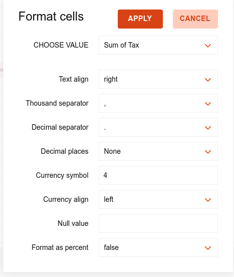
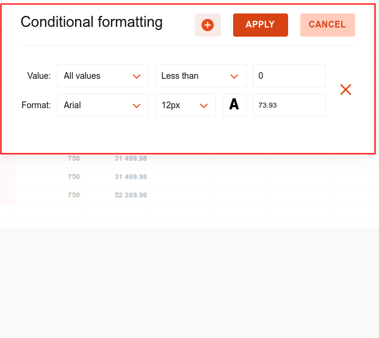
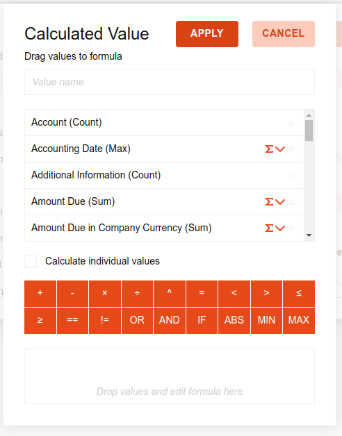
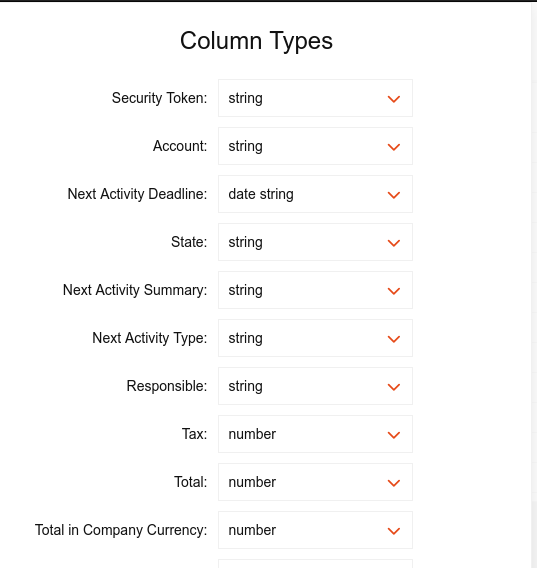
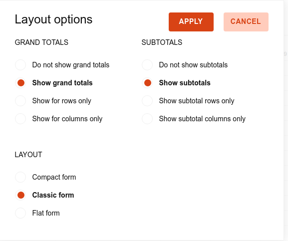

Create new report configuration.
Test Data to see how the report will be shown.
add the created report to the selected parent menu.
set the format of the selected fields.
format of the selected fields." style="width:100%;">set the format of the selected fields..
format of the selected fields." style="width:100%;">add new computed Fields with the custom value you want.
computed Fields with the custom value you want." style="width:100%;">change the type of data rendered in the view.
type of data rendered in the view." style="width:100%;">change the Layout of the view.
Layout of the view." style="width:100%;">any employee can save his custom design settings.
set default design settings by admin, So you can get back to it by original button.